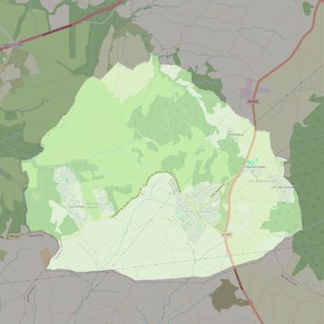

Santiago Apóstol
- Arciprestazgo
- Navalcarnero
- Población
- Sevilla la Nueva
- Dirección postal
- Pza. de Sevilla, 1
- Código postal
- 28609
- Extensión
- 24,70 km² (2.470 ha)
- Teléfono
- 624 220 844
- Correo electrónico
- sparroquiadesevillalanueva@gmail.com
- Información demográfica
- De la parroquia · De la población (Sevilla la Nueva) · Del arciprestazgo (Navalcarnero)


Descargar mapaLímites según decreto
Los del término municipal